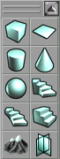
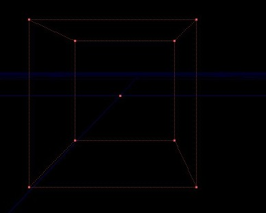
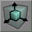
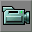
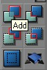

Learn The Tools
Learn The Tools
Part 2 of the Create a Room tutorial
This tutorial uses a hands-on approach. We won't be telling you 6 different methods for placing an object in a scene, or give you lengthy technical explanations. You'll do one exercise, then the next, and maybe further down there'll be another exercise which incorporates some of one and some of the other, and before you know it you're doing it!  As this is intended to be a beginner's tutorial, we will assume you know nothing, we will try to use language a 10 year old can understand, and we are not afraid to repeat ourselves. Also note that we are not afraid to say things a second time. This document is intended to represent the current build, and should be updated accordingly.
As this is intended to be a beginner's tutorial, we will assume you know nothing, we will try to use language a 10 year old can understand, and we are not afraid to repeat ourselves. Also note that we are not afraid to say things a second time. This document is intended to represent the current build, and should be updated accordingly.
There's 200 Create a Room tutorials out there but how many take you just a step further? This one does.
OK, if you've already done the previous tutorial, let's get rid of that just to make you do it all over again.
Do File → New
Add a Builder Brush
Left click on the Cube Builder icon in the top left corner of your Brush Builders pallete

The Red Builder Brush appears in your scene at the default size of 256 Unreal Units (UU). See General Scale and Dimensions.
In the Perspective window right drag around till you can see your brush.

The Red Builder Brush, like the 2D circle which represents where you can potentially paint a round 2D shape in Photoshop, represents where you can potentially create a 3D shape in Unreal: also known as a Brush for some reason. |
Translate
You got your 3 gray windows; Top, Front and Side orthogonal viewports. In the Front window, hold the Ctrl key and left drag anywhere in the window. Your Builder Brush should turn a bright red indicating that it is selected and you can drag it around in the window. Move it up a bit. Now click in the Perspective window. The window should update and your Builder Brush snaps upwards.
Auto Update
Click the little joystick icon in the top left corner of the Perspective window, which is confusingly identical to the Play Map! button. Now in the Side window Ctrl drag your Builder Brush around a bit. You should now see immediate feedback in the Perspective window. You can turn Auto Update on in the other windows if you like. Drag it around a bit in the Top window. Note how each time you select a new window the border turns white indicating it is selected. If you have a slower computer or a mind bogglingly complex scene, you can turn Auto Update off. If you close the file and open it back up again, your settings are lost, you'll have to turn it back on again.
Scale
Click on the scale button just below the camera icon in the top left of your toolbox:  (If you hold your mouse over it, it should say Actor Scaling). It becomes highlighted and your cursor changes to a midievil cross. Hold the Ctrl key and left drag slowly left and right in one of the orthogonal Viewports the Red Builder Brush scales in one axis. Now Ctrl right drag. It scales in a different axis. Do the same in the two other orthogonal views. Note how each window shares one scaling axes with one window and one axis with the other. I won't elaborate on which window does what axis. Just play around a bit till you get a feel for the scaling thing. If you accidentally scale in the wrong direction, just hit Ctrl Z to undo. You can hold both mouse buttons at the same time and scale two axis at once.
Rotate
Just to the right of the Actor Scaling button, click the Actor Rotate button. ![[button.mode.rotate]](images/button-mode-rotate.gif) Ctrl left drag in any of the viewports and your Builder Brush will rotate in 1 axis relative to the window view. Ctrl right drag and it rotates in a second axis. With it rotated a bit off from 90 degrees, go back to the scale button and try scaling. Note how it flattens out relative to the camera view, not the object itself, so now instead of a cube, we have like a rhomboid shaped object.
Ctrl left drag in any of the viewports and your Builder Brush will rotate in 1 axis relative to the window view. Ctrl right drag and it rotates in a second axis. With it rotated a bit off from 90 degrees, go back to the scale button and try scaling. Note how it flattens out relative to the camera view, not the object itself, so now instead of a cube, we have like a rhomboid shaped object.
Where's the Cursor?
OK, so now you got your Brush rotated and scaled and you want to move it around a bit like before, so you remember how to do that, right? You just Ctrl left drag in one of the windows and... OOPS! We're still in rotate mode! Must be the button undernerneath Actor Scaling with the T in it, right? Sorry, if you hold your mouse over the button, it says that's for moving textures. You can hold your mouse over every button on the interface and there's not a move tool to be found. ?????? Well, in their magnanimous effort to do everything different, Epic has cleverly disguised the traditional cursor button that everybody in the world is familiar with as a camera. Go figure.

Click the camera button now to return you to normal operation.
Reset
Now go back and left click on your Cube Builder button like you're going to build a new cube. Does it create a new cube? Surprise! No, it resets the Builder Brush. Remember we haven't actually created anything yet, we're only playing with the Builder Brush here.
Add a Cube
OK let's Add a Space. If you've already done the Create a Room tutorial, by now you should know how to Subtract a Space, so you should pretty much intuitively know where to find the Add a Space button, right? But just in case, since this is a beginner's tutorial, let me refresh your memory.

OK so you got your Builder Brush and you click Add and you should see the default texture appear. Whoops! nothing happened. Click it again. Nope. Click it a little harder and longer. Sorry. Oh that's right, I bet you forgot to Build All like in the Create a Room tutorial, right? Just to be different, this time instead of clicking on the Build All button, go to the menu bar at the very top and select Build → Build all. Still no cube. Maybe we forgot to enter the proper size dimensions, so right click on the Cube Builder button and let's enter some new values of 512, 512 and 512. Click the Build button and close the window and... HEY! What's that blue thing? The Builder brush obviously made something so why isn't it showing up in the scene? Not only that but if you carefully click on the edge of the blue box to select it, then hold the Ctrl key and left drag, you will see that it separates from another one underneath and maybe yet another depending on how many times you clicked the Add button. So where's our cube? You remember in the previous tutorial Create a Room, we had you Subtract a Space before anything else? That is because this is the fundamental building block of everything you can place in the visible Unreal world.
You can not add solid geometry into your Map unless you first place it into a Subtracted Space.
In much the same way that in the real world you can't put a human into space without being in some type of container, in the Unreal world everything must be in a container, or Subtracted Space to be visible. Nuff said?
No, Add a Cube, really
And you know what? If you just take the 512 Builder Brush you just made and subtract it out around your added space you ain't gonna get nothin buddy. Sorry to mislead you. We're just going to have to go back and do it all over again. So therefore...
Do File → New
Subtract a Large Space - Right click on the Cube Builder button and ensure that the values are set to 512 and click Build. Click on the Subtract button..
Now enter new values of 256, click Build and close the window.
Click on the Add button. Voila! That wasn't so hard now, was it?
Build All?
At this point we're just about at the point where we were in the previous Create a Room tutorial, only now we've got a room with an added space in it and we're just about ready to play our Map, right? So let's click the Build All button. (The one at the top that looks like a cube with a lightbulb next to it, remember? Sorry folks, this is a beginner's tutorial.) And BANG! everything suddenly disappears in the Perspective window. What happened to our room? I'm not leading you on another wild goose chase am I? Actually yes and no. At the top of the Perspective window is some buttons which look like various cubes. If you hold your mouse over them you can see that they represent different methods of rendering the viewport such as Wireframe, etc. About the 4th one over, click on the one that says Textured. Now you can see that your room is indeed still there. When we clicked the Build All button, we just rendered the scene and forgot to add a light first. If you go a couple buttons over and switch back to Dynamic Light, you will notice that you can't see the grid lines through the cube any longer. We have just created a pitch black room.
And of course you realize if we added a light now and clicked Build all, then went to play our map, you would get an error if we didn't add a PlayerStart first. The game needs to know where to spawn a player into the scene. So go ahead and add those now as we're going to continue the tutorial from here.. You might want to switch over from Dynamic Light back to Textured for a moment so you can see what you're doing as there is currently no light in the scene.
One More Time!
So to reiterrate:
You pretty much have to do all the steps in the Create a Room tutorial;
- Subtract a Space
- Add a Light
- Add a Playerstart
before you can play your map in the Unreal game.
Change the Texture
OK so you should have a 512 subtracted room with a 256 added cube in it. It might be kind of hard to distinguish the added space because it has the same texture as the subtracted space, so let's change the texture to a contrasting color. First left click one of the surfaces of your added cube. It should turn a blueish color indicating it's selected. Now open the Texture Browser - Click on the button in the top toolbar that looks like a Landscape Painting. The Texture Browser opens.
Now in the Texture Browser window. Go to File → Open. You should be taken to Unreal's default texture folder with a list of Texture Packages. Let's open Alleria Terrain. Select any of the textures which appear on the list and it should be immediately applied to the selected surface of your cube. Select a different surface and click on a different texture. BANG there it is. Simple, huh? Now hold the Ctrl key and click on multiple surfaces to group select. If you accidentaly clicked one you didn't want simply Ctrl click a second time to deselect it.
Let's say we want to apply textures to all the walls but not the floor and ceiling. First select one surface. Now press Shift B and all the surfaces become selected.. Now hold Ctrl and deselect the floor and ceiling. Click on a new Texture and there you are. Easy!
Importing Your Own Textures
OK enough using the same textures everybody else is using. Let's jump straight into creating our own, shall we?
Open your favorite graphics app, Photoshop, Painter, whatever as long as you can save a .tga file.
We'll create a new file. Enter a size of 256 X 256.
Note: Texture files must be in multiples of 2;
2 X 2
4 X 4
8, 16, 32, 64, 128, 256, 512, 1024
Make a quick pattern. Don't go getting all creative on me, just do something quick and dirty like a gradient or something and save it as a 24 bit .tga. You don't have to save it in the Unreal folder, however I have found it makes things a lot easier if you create a Temp folder in the same directory as your UT2003 folder like this: C:\Unreal Projects. It just simplifies things for me to have a folder one level up from Unreal to store all my source and temp files. Now let's go back to Unreal and in the Texture Browser window, Do File→ Import and locate your .tga texture. When you go Open, an Import Texture dialog box appears. Under Package, you can name it anything you like but I highly recommend distinguishing it as a texture package like this: myFilenameTex. Although there are different types of packages in Unreal, the application is sometimes unable to distinguish between different packages if they share the same name which can cause major, and I mean MAJOR problems. You'll go to open your file and all your textures will be gone for good. No joke. So develop a descriptive naming convention for your Packages from the start and you will avoid SERIOUS problems. eg.; myFilenameTex, myFilenameMesh, myFilenameAnims. Under Package name is Group name. This can be blank since we're just working with the one texture for now. Group is for when you have like 40 different Wall textures and 20 ceiling textures and you need a way to keep them all organized. That can be more useful later on. Don't even worry about it for now. Leave the texture name as it is and click OK and there should be your new texture in the texture browser
Save yer Package
OK so we got a new package with a grand total of 1 texture in it. Let's save our new package for later use. In the Texture Browser window Do File → Save. We are taken to the default Texture folder inside the UT2003 folder, and that's exactly where we will save our Package. You understand the difference there? You can save your source textures anywhere you like but you should save your texture Package in UT2003\Textures. Got it? Ok so now that we got it in there go ahead and apply your new texture to your added cube and apply one of the Alleria Terrain textures to all the surfaces of your room (Subtracted Space). (Hint - Use Shift B to select all.) To get back to Alleria Terrain click on the white dialog that's currently says the name of your texture package. A drop down menu appears with a list of the default Texture Packages and any others you may have opened during this session.
Resizing a Space.
Ok so if you haven't added your Light and Playerstart yet, please do so now and bring it up to par, Build All, everything. We're going to continue on from there. You should have a 512 room with a 256 cube inside. Select your added cube. Note if it turns bright red you haven't selected the added space, you've selected the Red Builder Brush. To separate the brush from the cube Ctrl drag anywhere out in open space in one of the viewports and the Builder brush should automatically become selected. Drag it off to the side somewhere to get it out of the way. Note how added spaces are blue and subtracted spaces are brown. Click on the edge of your blue added space to select it. It should turn bright blue. Now go click on your Scale button and resize it. Note how you can see the updates in the orthogonal views but in the Perspective view there's like 2 boxes now. This is just to save processing power. You won't actually see your changes until you Build All
Get On With It!
OK, so you made a room. So what? Now you should be familiar enough with the basic tools in Unreal to explore the WIKI further and make some sense out of some of the more advanced pages. I'm gonna cut you loose now. The Unreal world is yours to explore.
Now that you've got the basics, you might want to check out Mapping Lessons/Functional Map . It is identical to this tutorial but is written in the shorter, more concise WIKI style. You might want to compare it to familiarize yourself with the basic, shorthand style of other pages you will find throught the WIKI.
Where To Go Next
From here you might want to check out a few of the tutorials featured in the sequence of Mapping Lessons.
- Place a Pickup - Adding Weapons to your Map
- Creating a Terrain
- Adding Sunlight
- Building A SkyBox
Musicalglass: When I first came to the WIKI a few years back, I had a difficult time with many of the topics on this page. Now that I finally understand it, I hope I have made it easier for others to understand as well. Kudos go to Buzz at: http://www.3dbuzz.com for his extremely understandable free video tutorials. Thanks Buzz!
GRAF1K: The Unreal Wiki (note not all caps – see the logo) is always in need of refactoring, more info, and everything else. Thanks.